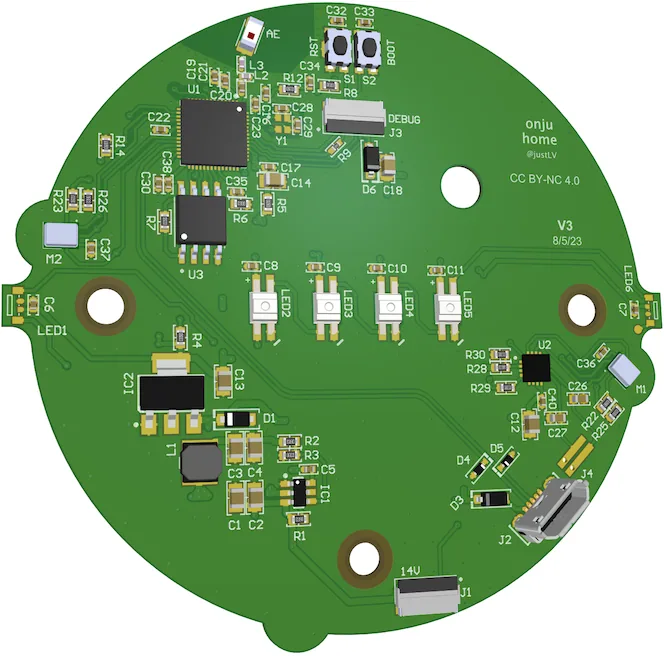

← 返回全部路线Onju Voice v2 仓库中的替换板渲染图；图片未单独声明授权。 查看图片来源 ↗
Onju Voice v2
- 将改装 Nest Mini 连接本地或云端对话代理，扩展多设备语音入口。
- 5/5 个维度有可核验来源
- 只使用有可核验来源的维度并按有效权重重新归一；成本维度同时取得二手价与改造零件/工具投入来源。

它能变成什么
- 语音助手
- 设备范围 Google Nest Mini 第二代 + Onju 替换板
- 设备类别 音箱与语音
- AI 关系 AI 功能改造
- 路线类型 具体改造路线
- 资料最近核对 2026-10-20
动手前
- 改造方法 替换主板
- 上手难度 高难度
- 拆机 需要
- 焊接 依组装方案
- 云 API / 服务 可选
- 停止条件 同一家族的后继版本，不能算作独立硬件复现。
- 固件 待核实
- 地区版本 待核实
- 二手价范围 21.25–30.49 GBP · Google Nest Mini 第二代完整/带电源实例的商品价；不含运费、税费。
- 改造成本 25–44.6 GBP · 一块已组装 Onju Voice 替换板：社区 2026 年未使用板报价为两块 50 英镑，eBay 新板在售价 44.60 英镑；不含运费与可复用宿主机。价格来源 1 ↗ · 价格来源 2 ↗ · 价格来源 3 ↗ · 价格来源 4 ↗
- 可能成本 Onju PCBA
- 可能成本 拆装工具
- 可能成本 音频/模型服务器
- 可能成本 可选 API
风险与恢复
- 数据丢失风险 可能发生
- 刷坏 / 无法启动风险 可能发生
- 恢复路线 保留原主板；硬件损伤和返修可行性需自行评估。
- 恢复资料 ↗（无已核验链接）
证据、维护与来源
- E1 · 源码与部署文档 README 有第二代 Nest Mini 替换板、服务器配置和固件烧录步骤；其 X 链接指向早期 Onju 演示，不作为 v2 新功能实测证据。
- 实机状态 KitAgain 未对此设备进行实机测试。
- 维护状态 仓库未归档
- GitHub 最后 push 2026-04-13T17:01:04Z
- 仓库许可证 MIT
- 近期 push 不证明型号可用；根许可证也不自动覆盖固件、模型、品牌或第三方组件。
- 上游项目文档 ↗2026-10-20先用它了解项目能做什么、怎样开始，以及作者写明的限制。https://github.com/justLV/onju-v2/blob/master/README.md
- 用于补看作者展示的设备和过程；视频画面未当作已核验结果。https://x.com/justLV/status/1681377298308820992
项目账号与已核实作者主页
- justLV · GitHub ↗ — 源码仓库所有者账号；不据此推断其为唯一作者
- Justin Alvey / justLV · X ↗ — Onju v2 仓库作者；现有 X 演示来自早期 Onju，不能证明 v2 全部能力